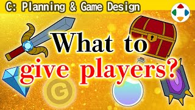
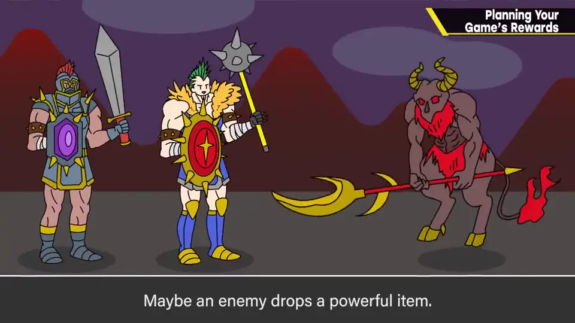
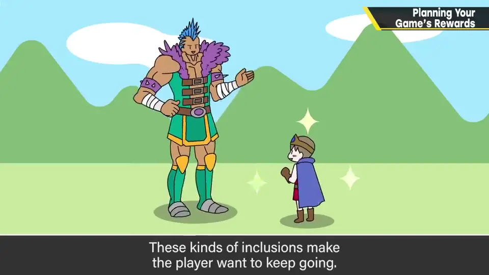
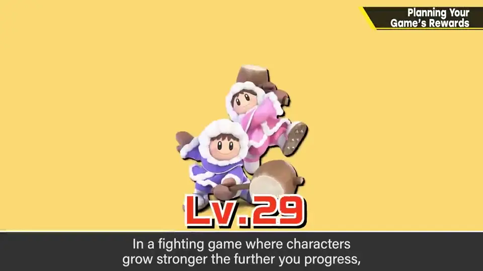
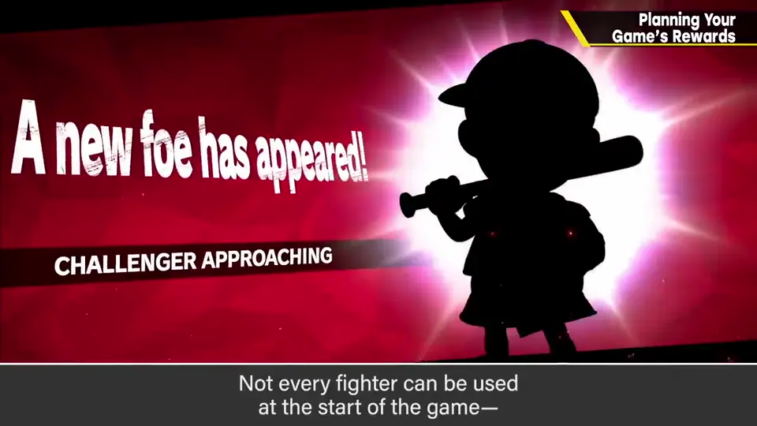
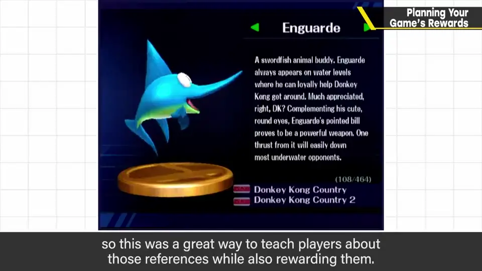
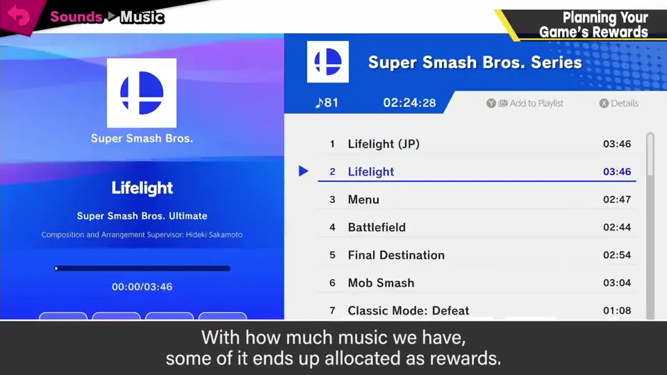
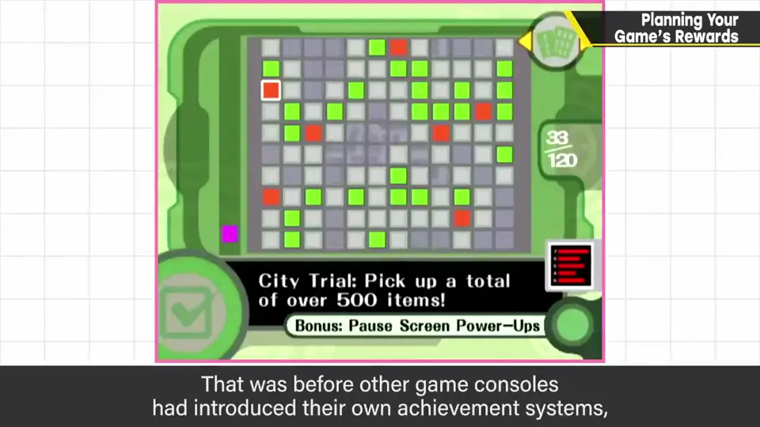
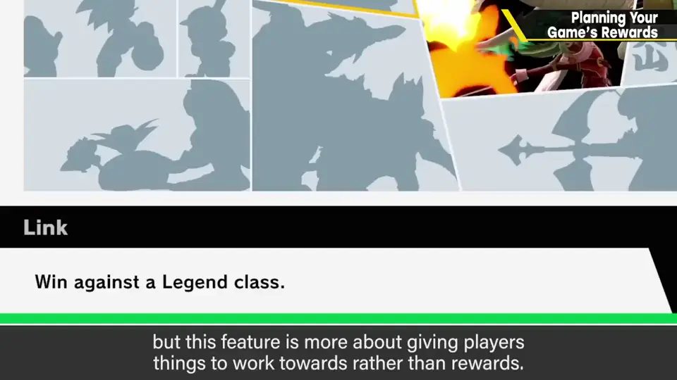

速览
游戏中的奖励（报酬）已不可或缺，但如果没东西可给，就什么都做不了，所以要在企划阶段好好想清楚能把什么当奖励。游戏中最有效的是让玩家角色单纯变强：用钱买装备、用经验值升级、用技能点学技能、敌人掉强力道具、前方宝箱里拿东西、收集素材合成装备道具设施——这些纯粹提高「想往前看」的欲望；卡比也让人期待前面会遇到什么复制能力。也有让收集品可能丢失、为游戏加深度的做法。但有能这样做和不能这样做的企划，例如《大乱斗》就很难：对战游戏若给与进度挂钩的角色强化，可能变成「全角色练完才能开始」。《大乱斗》准备的奖励：斗士（不是一开始全能用，要解锁，还设计成以挑战者身份乱入，看似麻烦实际出得挺频繁）；手办（DX 到 4 都有，既是奖励也引导各作品角色背景，但做得太认真、制作成本太高）；贴纸（X，贴在底座下强化斗士，省去解说与建模，能放更多角色）；命魂（契合游戏设定，装备到斗士上强化，比手办现实，能出现各种角色本身很开心）；积分（某种货币，怎么玩都会增加，但没有更强装备可买；还有过硬币射击器）；音乐（利用曲数多做一定奖励，但不能一开始就听曲子不好，近年数量趋少）；通关后可调整菜单曲出现率、一览影片等模式奖励。统管这些的是挑战板（Clear Getter）：最初在《卡比的空中滑翔》里加入，早于其他主机的成就系统；在游戏内满足条件就打开一格、并显示相邻格子条件的提示，有些格子有奖励——但与其说奖励，更多是给游戏某种目的。从「给游戏目的」的意义看，动机与报酬是一体两面。做太多玩家奉陪不了，拿捏很难；但玩了却毫无报酬或进展，多么乏味——奖励应从初期企划与设计就考虑。
1. 奖励要在企划阶段想好 0:04
2. 最有效：让角色变强 0:21
游戏中最有效的奖励，是让玩家角色单纯变强。比如单纯的数值提升：
- 用钱买装备、用经验值升级、用技能点学技能；
- 敌人掉落强力道具、前方有宝箱可以拿；
- 收集素材合成，整备装备、道具、设施。


这些行为纯粹提高「想看前面」的欲望。卡比也是：会期待前面能遇到什么复制能力，从而推动玩家前进。也有让收集来的东西可能丢失、为游戏增加深度的做法。
3. 大乱斗：难以给成长的企划 1:19
但有能这样做的企划，也有做不到的。例如《大乱斗》就很难：明明是对战游戏，若给与游戏进度挂钩的角色强化，可能变成「把全部角色练完才算开始」。

4. 大乱斗的奖励清单 1:39
| 奖励 | 说明 |
|---|---|
| 斗士 | 不是一开始全能用，需解锁；以挑战者乱入的形式出现——看似麻烦，实际上出得挺频繁 |
| 手办（DX～4） | 引导各作品角色背景的同时作为奖励；缺点是做得太认真、制作成本太高 |
| 贴纸（X） | 贴在底座下强化斗士；省掉解说和建模，能实装更多角色 |
| 命魂（特别版） | 契合游戏设定，装备到斗士身上强化；比手办现实；能看到各种角色出场本身就开心 |
| 积分 | 某种货币，怎么玩都会增加；但没有斗士可买的装备（还有过硬币射击器） |
| 音乐 | 利用曲数多作为一定奖励；但一开始不能听也让人不快，近年数量趋于控制 |
| 模式奖励 | 全通后可调整菜单曲出现率、一览影片等 |



5. 挑战板：给游戏以目的 3:51
统管这些奖励的机制是挑战板（Clear Getter）。樱井最初在《卡比的空中滑翔》中加入——在其他主机内置成就系统之前，就导入了类似的系统。


在游戏中满足某个条件，就打开一格，并得到相邻格条件的提示；部分格子会给奖励。但比起奖励，它更多是用来给游戏某种目的的。
自测题
1. 为什么奖励要在企划阶段就想好？
没有可给的东西就什么都做不了，需要提前设计能拿什么当奖励。 0:04
2. 为什么《大乱斗》不适合用「角色成长」做奖励？
对战游戏若角色随进度强化，可能要先把全部角色练完才能真正开始。 1:19
3. 列举《大乱斗》系列用过的三种奖励及其特点。
例：斗士解锁（以乱入挑战者形式出现）；手办（介绍背景但成本高）；贴纸（省建模、可放更多角色）；命魂（装备强化）；音乐；积分。 1:39
4. 挑战板的主要作用是什么？
与其说是奖励，更多是给游戏某种目的；体现动机与报酬一体两面。 4:10